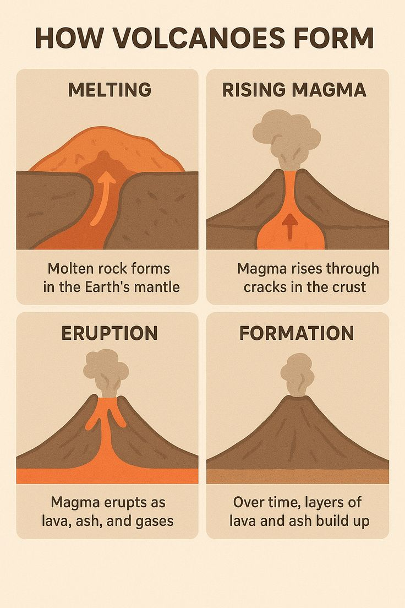

About melting and cooling
Melting is the step in the rock cycle where solid rocks turn into liquid magma (or lava if it reaches the surface), restarting the cycle by allowing new igneous rocks to form when the molten material cools and hardens. This happens when any type of rock—igneous, sedimentary, or metamorphic
Melting and Cooling – Key Points
- Melting turns solid rocks into hot liquid magma deep inside Earth (very high heat).
- Magma forms when rocks get hot enough (usually from Earth's internal heat or subduction).
- When magma reaches the surface, it is called lava.
- Cooling makes magma or lava harden into solid igneous rock.
- Slow cooling underground → big crystals (intrusive igneous, e.g., granite).
- Fast cooling on surface → small crystals or glassy (extrusive igneous, e.g., basalt).
Examples: Granite (intrusive), Basalt (extrusive).